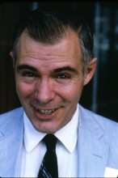

Please note: the AAS Obituaries are temporarily being hosted on this website while their full content is being ingested into the PubPub publishing platform newly adopted by the Bulletin of the American Astronomical Society. When the migration is complete, your existing links will take you to the final, migrated content. Contact peter.williams@aas.org with any questions.
Richard L. Sears (1931-2009)
Photo credit: AIP Emilio Segrè Visual Archives, John Irwin Slide Collection
Richard L. Sears, Associate Professor Emeritus at the University of Michigan, died on 26 January 2009. He was was born on 27 March, 1931, in Boston, MA. He lived in Chile in the early 1940’s, where his father served as a diplomat, and became fluent in Spanish. He graduated from St. Alban’s High School in Washington, DC. His bachelor’s degree was from Harvard (1953). He obtained a master’s (1955) and Ph.D. from Indiana University (1958) under Marshall Wrubel. Upon graduation, he was a Visiting Fellow in Astronomy at Princeton University and later became an Instructor in Astronomy at Indiana (1958-1959). In 1959-1961 he was on the staff of the Lick Observatory in California and worked with A. E. Whitford. He served as a Senior Research Fellow in Physics under William A. Fowler at the California Institute of Technology (1961-1964). He was a Visiting Assistant Professor of Physics and Astronomy at Vanderbilt University. Professor Sears came to the University of Michigan in 1965, and was promoted to Associate Professor in 1970. He retired from the Michigan Department of Astronomy in May of 2005.
Professor Sears early career was devoted to research in stellar structure and evolution. His solar model was the basis of the notorious neutrino flux discrepancy that eventually led to neutrino oscillations. While he continued to do research in stellar astronomy, his later career was devoted primarily to teaching. He was highly respected and fondly regarded by students and colleagues alike, who marveled at his encyclopedic knowledge of astronomy, and science in general. The acknowledgement of my 1995 Introduction to Cosmochemistry ends with “Special thanks are due to my friend and colleague of three decades, Richard Sears. He has helped me in more ways than could possibly be set down, and I do not think I could do astronomy without him.”
Richard Sears had one sibling, Joan, who died in 1974. His wife Yvonne and daughter Amber survive him.
Obituary written by: Charles Cowley (Univ of Michigan)
BAAS Citation: BAAS, 2013, 45, 031